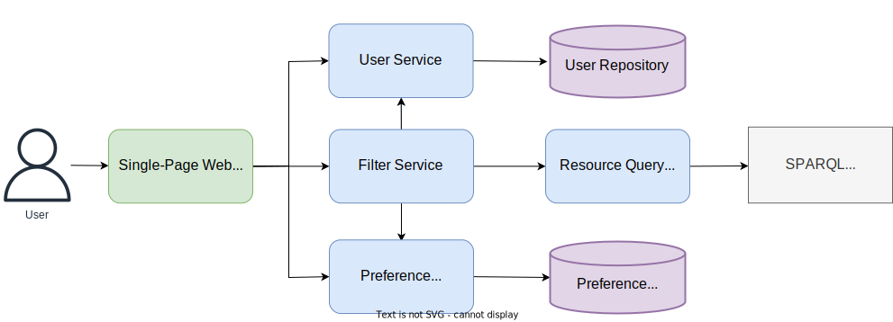
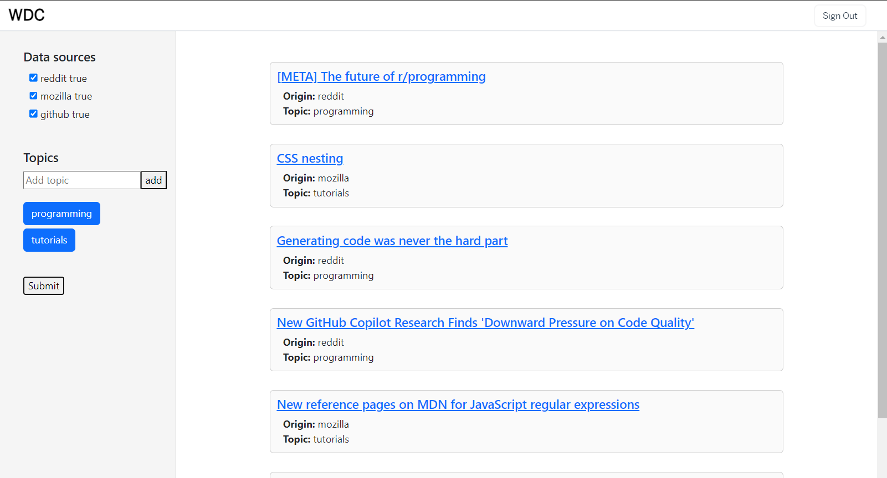

1. Project description
Develop a multi-device (micro-)service-oriented system able to model and manage, in a smart way, public technical content regarding Web development (such as tutorials, presentations, examples of source-code, news, events, etc.) from multiple sources such as DevDocs, GitHub Pages, MDN Web Docs, Reddit, and others. Using the Linked Data principles, the application will generate and expose for human users and software – via a SPARQL endpoint – knowledge of interest for Web developers according to various criteria: topic (e.g., a certain programming language/paradigm, only guides/references about a specific framework), target platform, purpose, geographical area, period of time, user preferences,...
2. Architecture of the Web Application
High Level Arhitecture

2.1 User Service
Used for registering, authenticating and managing users
2.2 Preference Service
Used for managing user preferences
Link to OpenAPI
2.3 Filter Service
Filters content based on user preferences. The Preference Manager receives the currently logged in user and the associated preferences. The Result Processing Layer then receives the user preferences from the Preference Manager and, based on them, filters the contents received from the Resource Query Service.
2.4 Database Structure

3. Frontend Mockup

4. Linked Data Principles
Linked Data is a set of principles and best practices for structuring, connecting, and exposing data on the web in a way that allows it to be easily linked and interrelated. The core principles include:
In the context of this project, Linked Data principles are applied to model technical content related to web development. Each piece of content, such as tutorials, examples, and documentation, is represented as a resource with a unique URI. Relationships between resources are established using links, creating a web of interconnected knowledge.
- Uniform Resource Identifiers (URIs): Every resource should be uniquely identified using a URI.
- HTTP URIs: URIs should be accessible via HTTP, enabling dereferencing for retrieving resource representations.
- Resource Representation: Resources should be represented in a standard format, usually using RDF (Resource Description Framework).
- Links Between Resources: Include links in data to connect related resources, enabling navigation and discovery.
5. Retrieving Data
We'll use a web scraping service to get the data from the following sources: Reddit, DevDocs, MDN Web Docs, GitHub Pages.
We will then process the retrieved data and create RDF triples in accordance with Linked Data principles.
These RDF triples will represent the relationships and attributes of the collected data, allowing for seamless integration into our triplestore. Once the RDF triples are prepared, we will load them into the selected triplestore, ensuring that our SPARQL endpoint is populated with the interconnected data.
6. Ontology
We'll make use of the following ontology and vocabularies in order to model our business case.
We will create an ontology that we can use to model the data we collect from the various sources. For example:
- PREFIX schema: https://schema.org/
- PREFIX rdf: http://www.w3.org/1999/02/22-rdf-syntax-ns#
- PREFIX rdfs: http://www.w3.org/2000/01/rdf-schema#
- PREFIX xsd: http://www.w3.org/2001/XMLSchema#
- PREFIX dc: http://purl.org/dc/elements/1.1/
- PREFIX tl: http://purl.org/NET/c4dm/timeline.owl#
- PREFIX event: http://purl.org/NET/c4dm/event.owl#
- PREFIX foaf: http://xmlns.com/foaf/0.1/
schema:WebDevelopment rdf:type rdf:Class ; rdfs:label "Web Development" . schema:Tutorial rdf:type rdf:Class ; rdfs:label "Tutorial" ; rdfs:subClassOf schema:CreativeWork . schema:ProgrammingLanguage rdf:type rdf:Class ; rdfs:label "Programming Language" . schema:hasTopic rdf:type rdf:Property ; rdfs:label "hasTopic" ; rdfs:domain schema:Tutorial ; rdfs:range schema:ProgrammingLanguage . schema:fromSource rdf:type rdf:Property ; rdfs:label "fromSource" ; rdfs:domain schema:Tutorial ; rdfs:range schema:WebDevelopment .